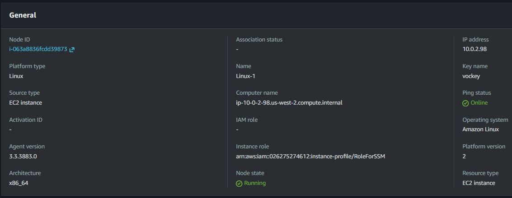
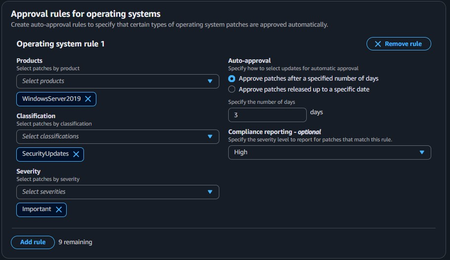
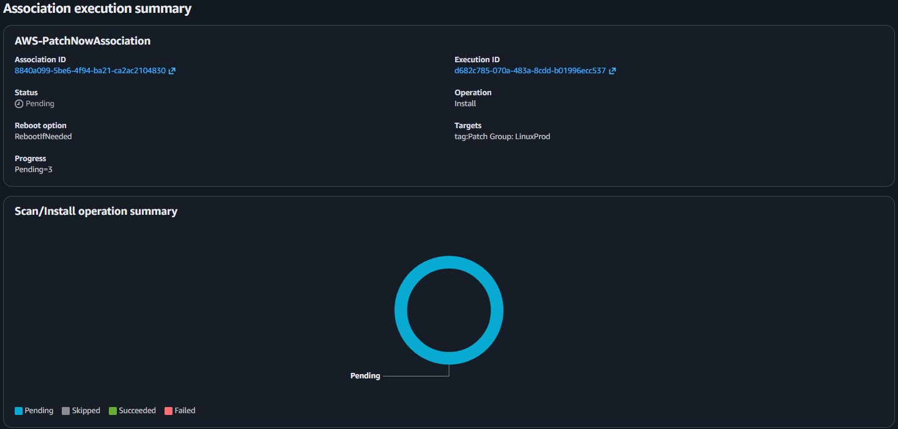
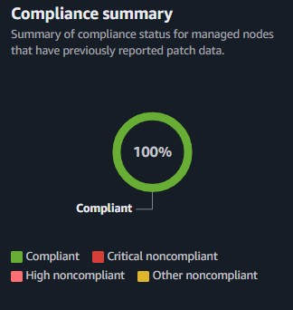

Patch Baselines & Groups
Applied default baselines to Amazon Linux resources and configured a custom security baseline specifically for Windows instances via the Systems Manager console.
This lab uses AWS Systems Manager Patch Manager to automate the OS updating process. It covers configuring default and custom patch baselines, applying patches based on tags, and verifying organizational compliance.
Utilized AWS Systems Manager to automate systems hardening. Verified managed nodes in Fleet Manager, created a custom Windows patch baseline, assigned instances using Patch Groups, and reported on fleet compliance.
Applied default baselines to Amazon Linux resources and configured a custom security baseline specifically for Windows instances via the Systems Manager console.
Executed patch operations across the fleet based on assigned tags and utilized the compliance dashboard to verify that all deployed instances met software requirements.
Detailed documentation on configuring Patch Manager and applying system updates.

LinuxProd instances using the default Amazon Linux 2 baseline.

Patch Group: WindowsProd tags to the corresponding Windows instances.WindowsProd tag array.RunPatchBaseline SSM document correctly applied updates to the instances.
This lab highlighted the power of AWS Systems Manager to centralize operations for patching heterogenous server fleets. By abstracting OS-level interactions into Patch Groups and Baselines, the patching process transcends manual node-by-node updates.
The capability to combine Run Command with specific resource tagging means administrators can implement precise update schedules targeting specific environments (e.g., prod vs. dev), completely eliminating human error and immediately validating compliance at an organizational scale.